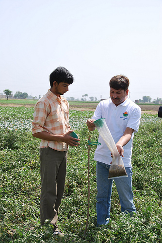

Agricultura orgánica en Chile
A nivel mundial la agricultura orgánica se ha desarrollado de forma rápida. Estudios recientes realizados por ODEPA (Oficina de Estudios y Políticas Agrarias) estiman que en la actualidad existen más de 63 millones de hectáreas orgánicas en el mundo, con 30 millones de hectáreas dedicadas a cultivos y 33 millones en recolección silvestre. En Chile la superficie de cultivos orgánicos es de 35.076 hectáreas. 
La agricultura orgánica se ha expandido tanto en superficie como en número de países, extendiéndose y profundizándose por todo el planeta. Hay tres causas que han determinado el crecimiento mundial de la agricultura orgánica:
- los niveles de ingresos de cada país
- los incentivos al desarrollo de la agricultura orgánica a través de políticas, programas, iniciativas públicas y privadas de fomento
- el nivel de conciencia y demanda de los consumidores.
En Chile la agricultura orgánica ha tenido un importante crecimiento, sin embargo es una actividad pequeña en comparación con la agricultura convencional (menos del 0,25%). En la agricultura orgánica en Chile participa un segmento limitado de agricultores. Los agricultores colocan sus productos preferentemente en los mercados de exportación. En Chile el mercado interno para productos orgánicos es prácticamente inexistente. Existen problemas en la cantidad de productos y de sostenibilidad. También, el problema es que existen tabúes que aún persisten, y que sostienen que los productos orgánicos son de inferior calidad y con menores rendimientos por unidades de producción.
En Chile como en otras partes, hay problemas que impactan de forma severa e irreversible la preservación de recursos naturales. Los problemas más importantes son:
- el uso intensivo e irracional de los recursos naturales
- el sobre uso de productos químicos en los medios de cultivo
- el monocultivo como estrategia de desarrollo
- el uso progresivo de energía fósil en forma de fertilizantes
- plaguicidas, maquinaria y combustibles
- el uso de fertilizantes sintéticos nitrogenados
Estas prácticas caracterizan el modelo “convencional” de producción agrícola. En contraste con la agricultura convencional, la agricultura orgánica es un sistema que fomenta y mejora la salud de los agroecosistemas porque protege la biodiversidad, los ciclos biológicos y la actividad biológica del suelo. La agricultura orgánica se caracteriza por la sostenibilidad a largo plazo. En cultivos orgánicos se toma en cuenta los efectos a mediano y largo plazo de las intervenciones agrícolas en los agroecosistemas.
La agricultura orgánica propone la producción de alimentos restaurando los equilibrios ecológicos para proteger la fertilidad del suelo o disminuir los problemas de plagas. La agricultura orgánica reduce las fuentes descontaminación de las aguas al eliminar el uso de fertilizantes y plaguicidas sintéticos, reduce la utilización de energías no renovables al sustituir agroquímicos, en cuya producción se requiere de una gran cantidad de combustibles fósiles. La agricultura orgánica contribuye a disminuir el efecto invernadero y el calentamiento global con la implementación de técnicas de producción orientadas a retener el carbono del suelo. Chile ha avanzado en leyes de cultivos al proponer la ley de certificación orgánica 20.089. Esta ley es de participación voluntaria y sus normas de cumplimiento son obligatorias. Esta ley está orientada sólo al mercado interno porque aún no tiene reconocimiento en los mercados internacionales.